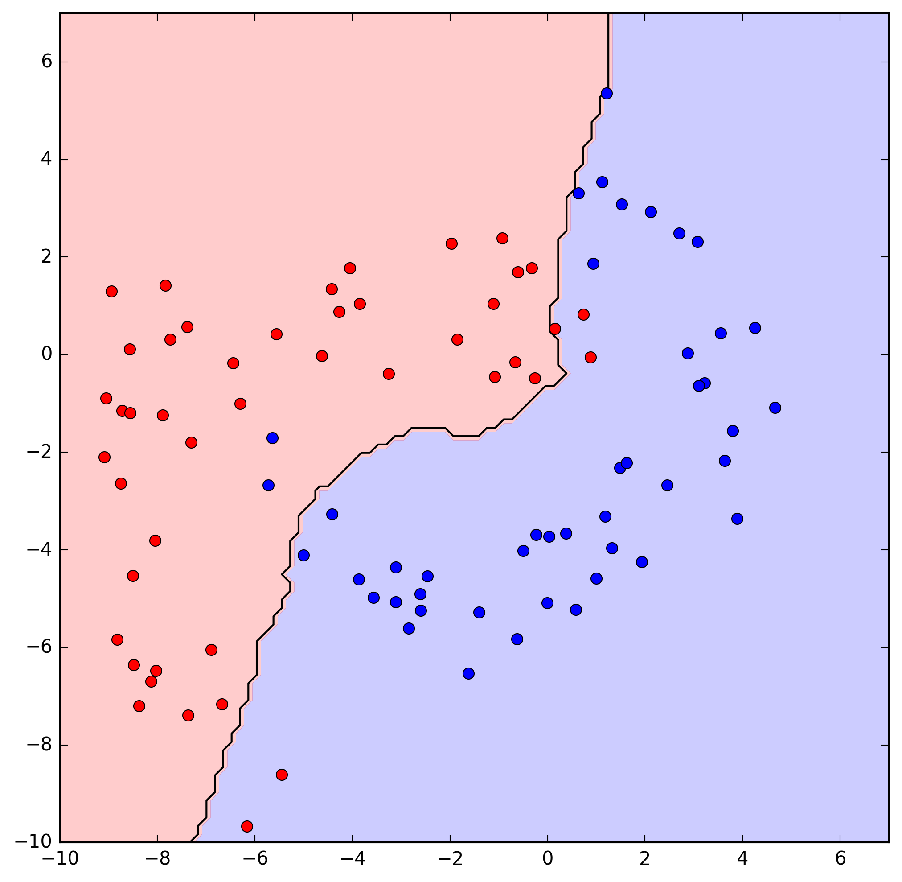
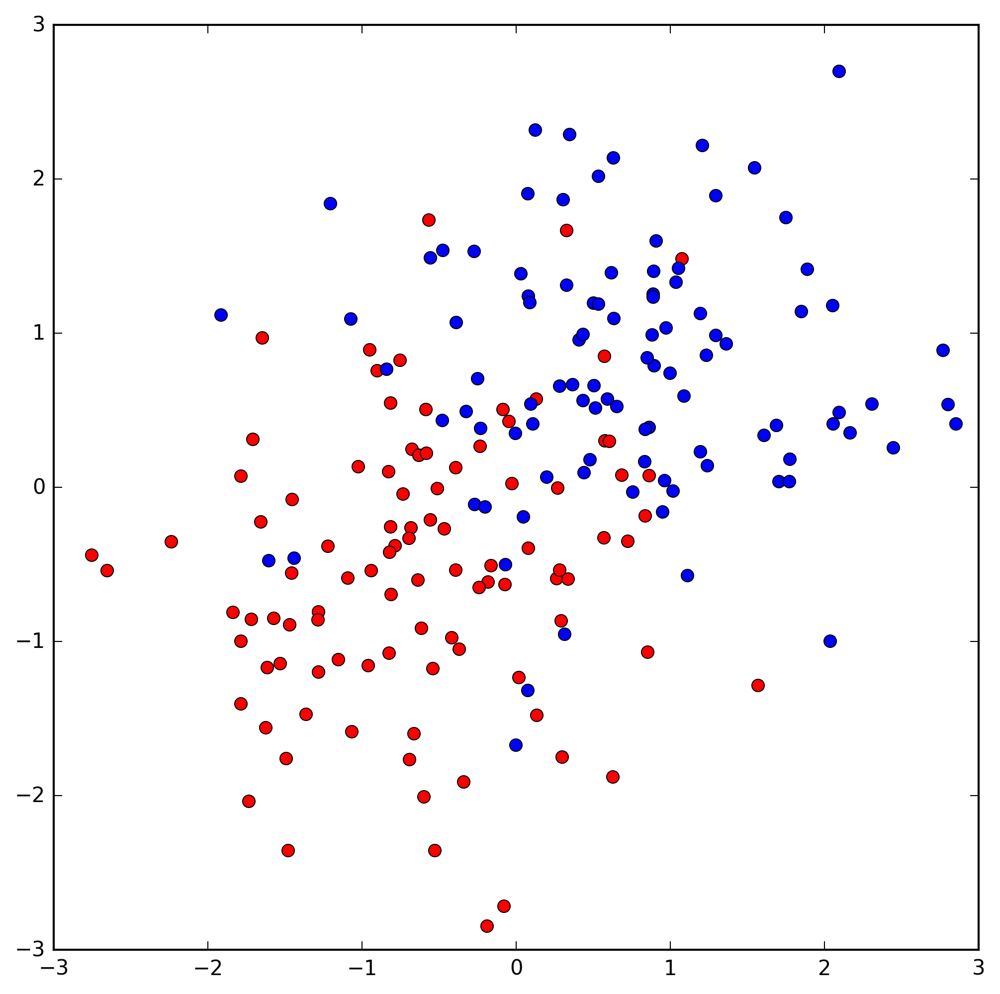

Aprendizagem Automática
6.Lazy Learning
Ludwig Krippahl
Lazy learning
Summary
- Lazy Learning
- K-Nearest Neighbours
- Kernel Regression
- Kernel Density Estimation
Lazy Learning
Lazy Learning
Lazy Learning
Lazy vs Eager learning
- So far we saw examples of
eager learning : - Represent the hypothesis class with a model
- Train a model on the data, fitting parameters
- (Data can then be discarded)
- Answer based on the model
- With
lazy learning there is no training step: - No model to represent the hypothesis class
- No training; the data is simply stored
- Answer based on the data itself
Lazy Learning
K-Nearest Neighbours
K-NN
K-Nearest Neighbours classifier
- Keep all the training set
- For new point, find closest k examples
- Return label of the majority
Lazy learning:
- No model to represent the hypothesis class
- No training; the data is simply stored
- Answer based on the data itself
K-NN
- For k=1, the result is a Voronoy tesselation:
K-NN
- For larger values (3,5) more complex tesselation:
K-NN
- In all cases, the decision boundary is piecewise linear
K-NN
- Higher k, less dependent on local conditions (1, 25)

K-NN
Implement k-NN classifier
- First, we need a distance function
- For categorical data, Hamming distance
- For continuous data
- Minkowski distance or p-norm
Dx,x′=∑d|xd−x′d|p−−−−−−−−−−−√p - Manhattan
Dx,x′=∑d|xd−x′d| - Euclidean
Dx,x′=∑d|xd−x′d|2−−−−−−−−−−−√
K-NN
Implement k-NN classifier
- Minkowski distance, p=2 (Euclidean distance)
K-NN
- Minkowski, p=1
- Minkowski, p=0.7
K-NN
Implement k-NN classifier
- Defining Minkowski distance (default p=2)
import numpy as np
def mink_dist(x, X, p = 2):
"""return p-norm values of point x distance to vector X"""
sq_diff = np.power(np.abs(X - x),p)
dists = np.power(np.sum(sq_diff,1),1.0/p)
return dists- Note: broadcasting, align by highest dimensions
See more on https://docs.scipy.org/doc/numpy-1.13.0/user/basics.broadcasting.html
K-NN
Implement k-NN classifier
- Classify by majority vote
from scipy.stats import mode
def k_nearest_ixs(x, X,k):
ixs = np.argsort(mink_dist(x,X))
return ixs[:k]
def knn_classify(x,X,Y,k):
ix = k_nearest_ixs(x,X,k)
return mode(Y[ix,0], axis=None)[0][0]- Note: mode returns two arrays, modes and counts.
See more on https://docs.scipy.org/doc/scipy/reference/generated/scipy.stats.mode.html
K-NN
Implement k-NN classifier
- Preprocessing?
- Distance functions are sensitive to scale
- However, care not to distort the data
- Depends on the problem (but generally, yes)
K-NN
Find the best k
- Load and set a third for tests

K-NN
Find the best k
- Cross-validation, testing different values of k
- Only odd values of k, to avoid ties
- Error is
1−accuracy (fraction of misclassifieds)
Important: cannot use test error
- If we do, then the test error becomes a biased estimator
K-NN
Find the best k (Note error profile)
K-NN
- Use best k (k=9), train with full training set, test
K-NN
Curse of dimensionality
- Distance methods rely on defining regions inside some border.
- But with many dimensions this is a problem
- Imagine that border is 5% of diameter.
- In 1D border occupies 5% of region
- In 2D border occupies ~10%
- In 3D border occupies ~14%
K-NN
Curse of dimensionality
- Distance methods work poorly in many dimensions
Lazy Learning
Regression
Regression
Instance Based Regression
- K-NN can be used for regression
- Predicted value: average of the k nearest neighbours
K-NN regression, k = 1

Regression
Instance Based Regression
- K-NN can be used for regression
- Predicted value: average of the k nearest neighbours
K-NN regression, k = 11
Regression
Instance Based Regression
- K-NN can be used for regression
- Predicted value: average of the k nearest neighbours
K-NN regression, k = 15
Regression
Instance Based Regression
- K-NN can be used for regression
- But discontinous prediction function
- We can solve this by giving less weight to more distant points, using all points
- Retains locality (closer weigh more), but a smooth curve
We'll use a Kernel function :
Regression
Common Kernels
(source: Wikipedia)
Regression
Kernel regression, example: kernel and estimator
- Gaussian kernel:
- Nadaraya-Watson estimator
- Or Priestley-Chao (for unequally spaced points):
Regression
Implementing Kernel regression
- Gaussian kernel:
import numpy as np
def gaussiank(u):
k=np.e**(-0.5*u**2)/np.sqrt(2*np.pi)
return k- Nadaraya-Watson estimator:
def nad_wat(K, h, X, Y, x):
num = 0
den = 0
for ix in range(len(X)):
u = (x-X[ix])/h
k = K(u)
num = num + Y[ix] * k
den = den + k
return num/denRegression
Curve depends on h
Regression
Kernel Density Estimation
- (Unsupervised learning): estimate distribution
Regression
Kernel Density Estimation
- Insted of histogram, add kernels
Regression
KDE, Scikit Learn
kde = KernelDensity(kernel='gaussian', bandwidth=bw)
kde.fit(X_r)
kde.score_samples(X_t)- Note: score_samples returns the logarithm of the density (useful for probabilities)
Lazy Learning
- For KDE store the data points
- Compute function value based on the data
Lazy Learning
Regression
Regression
Summary
- Lazy Learning vs Eager Learning
- K-NN classification
- Curse of dimensionality
- K-NN regression
- Kernel regression and density estimation
Further reading
- Alpaydin, Sections 8.1 through 8.4
- Mitchell, Sections 8.1 and 8.2
- Marsland, Section 8.4.
Aprendizagem Automática
6.Lazy Learning
Ludwig Krippahl